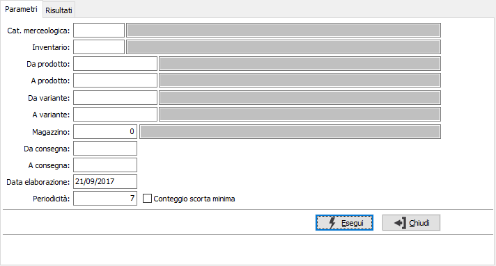
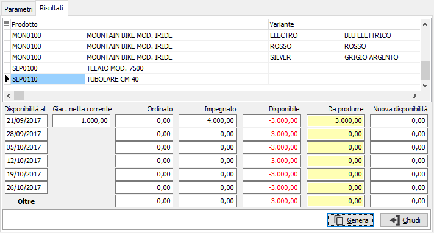
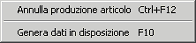

Selezione da disponibilità in disposizione
In questa finestra è possibile specificare i criteri di selezione per l'analisi delle disponibilità di magazzino in un arco di tempo; sulla base dei fabbisogni vengono calcolate le quantità da produrre e le date di produzione. I dati elaborati vengono visualizzati nella pagina dei risultati, dove possono essere modificati per poterli importare nella disposizione.

CATEGORIA MERCEOLOGICA: codice della categoria merceologica per cui si vuole effettuare la selezione di analisi. Sul campo è attiva la ricerca (F9) sulla tabella Categorie merceologiche.
INVENTARIO: eventuale codice Inventario per cui si vuole effettuare l'analisi. Sul campo è attiva la ricerca (F9) sulla tabella Codici inventario.
DA PRODOTTO: eventuale codice dell'articolo, presente in anagrafica Prodotti, da cui si desidera iniziare la selezione di analisi. Confermando a vuoto, la selezione inizia con il primo prodotto valido. Sul campo è attiva la ricerca (F9) sull’anagrafica prodotti.
A PRODOTTO: eventuale codice dell'articolo, presente in anagrafica Prodotti, a cui si desidera terminare la selezione di analisi. Confermando a vuoto, la selezione termina con l’ultimo valido. Sul campo è attiva la ricerca (F9) sull’anagrafica prodotti.
DA VARIANTE: campo presente solo se attiva la gestione varianti. Eventuale codice della variante, da cui si desidera iniziare la selezione di analisi. Confermando a vuoto, la selezione inizia con la prima variante valida. Sul campo sono attive le funzioni di ricerca (F9).
A VARIANTE: campo presente solo se attiva la gestione varianti. Eventuale codice della variante, a cui si desidera terminare la selezione di analisi. Confermando a vuoto, la selezione termina con l’ultima variante valida. Sul campo sono attive le funzioni di ricerca (F9).
MAGAZZINO: eventuale codice del magazzino a cui si vuole limitare la selezione. Confermando a vuoto, la selezione considera tutti i magazzini validi. Sul campo sono attive le funzioni di ricerca (F9).
DA DATA CONSEGNA: data di consegna da cui deve iniziare l’analisi degli ordini. Confermando a vuoto, l’analisi inizia con il primo ordine valido.
A DATA CONSEGNA: eventuale data di consegna con cui si desidera terminare l’analisi degli ordini. Confermando a vuoto, l’analisi si conclude con l'ultimo ordine valido.
DATA ELABORAZIONE: indicare la data in cui viene effettuata l'analisi, utilizzata come giorno di inizio per il conteggio delle date di produzione.
PERIODICITÀ:Indica il numero di giorni da considerare per generare le colonne dei risultati.
CONTEGGIO SCORTA MINIMA: definisce se considerare anche l'impegno dell'eventuale scorta minima presente per il prodotto, togliendola dalla giacenza iniziale (casella con segno di spunta), oppure non considerare la scorta minima del prodotto (casella vuota).
Dopo aver inserito i criteri necessari e premuto il pulsante Esegui, i prodotti elaborati vengono visualizzati nella pagina dei risultati.

In questa pagina vengono visualizzati per ogni prodotto, o prodotto e variante se gestita, le date di produzione e le disponibilità calcolate dall'elaborazione e vengono già proposte le quantità da produrre (da inserire in disposizione) che possono essere modificate a piacimento. Le quantità vengono visualizzate in colore rosso se negative in colore verde se sufficienti a coprire la disponibilità; nell'ultima colonna compaiono le disponibilità aggiornate con la quantità da produrre inserita in modo da visualizzare l'ipotetica situazione dopo la disposizione.

L'annullamento delle quantità può avvenire tramite il menù indicato a lato (attivato tramite la pressione del tasto destro del mouse), oppure azzerando la quantità da produrre nella data interessata. La pressione sul pulsante Genera o del tasto F10 o la selezione della voce dal menù del pulsante destro del mouse, determina l'inserimento dei dati selezionati nella disposizione.